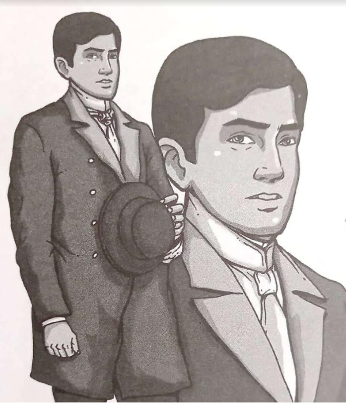

|  |
| Crisostomo Ibarra |
|
- He is the main protagonist of Noli Me Tangere; He is the son of the late Don Rafael Ibarra and grandson of Don Saturnino
- He is a wealthy and intelligent young man of Filipino and Spanish Descent who studied for 7 years in Europe.
- He is a great friend of Kapitan Tiago and is organized to marry his Daughter, Maria Clara, Ibarra's a childhood friend
|